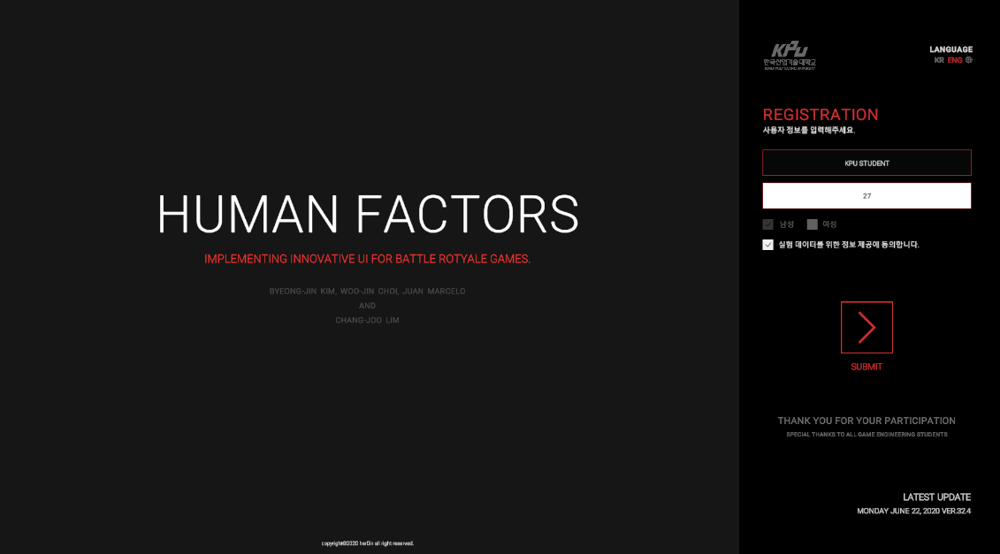
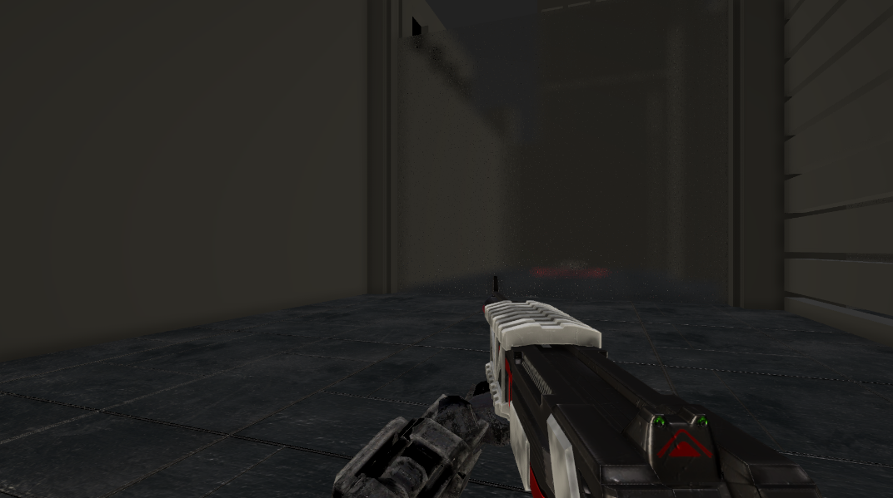
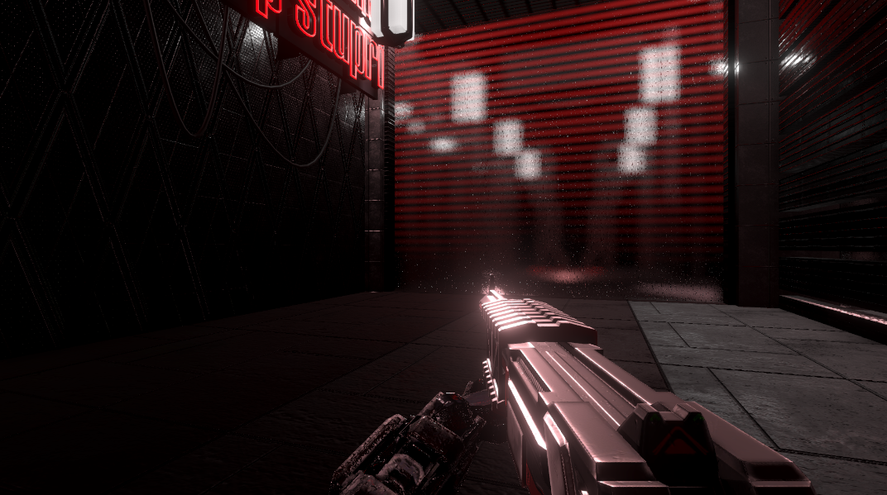
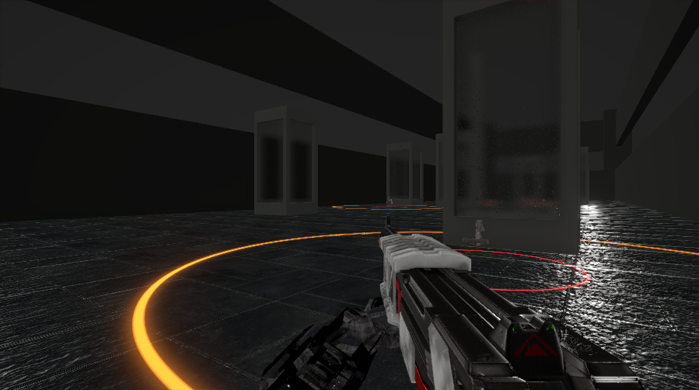
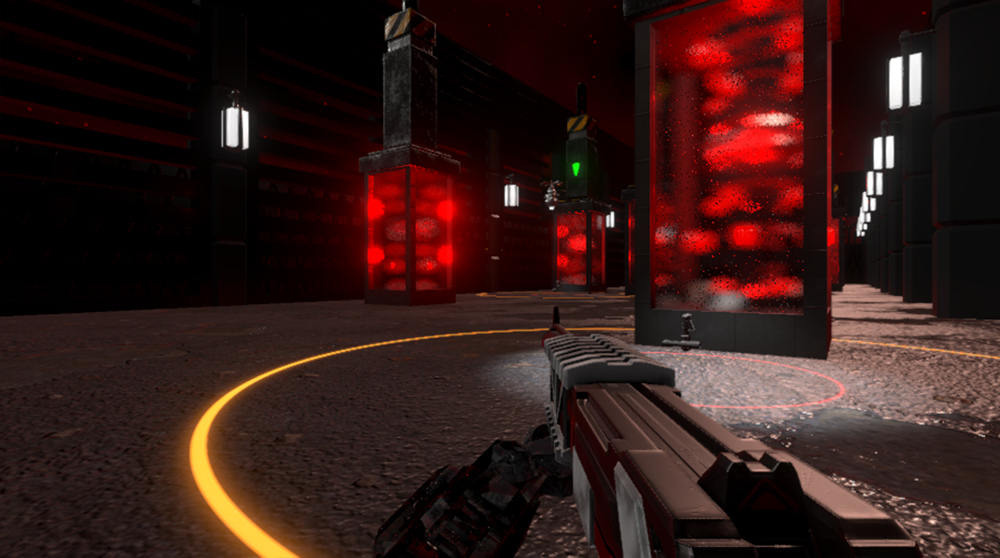
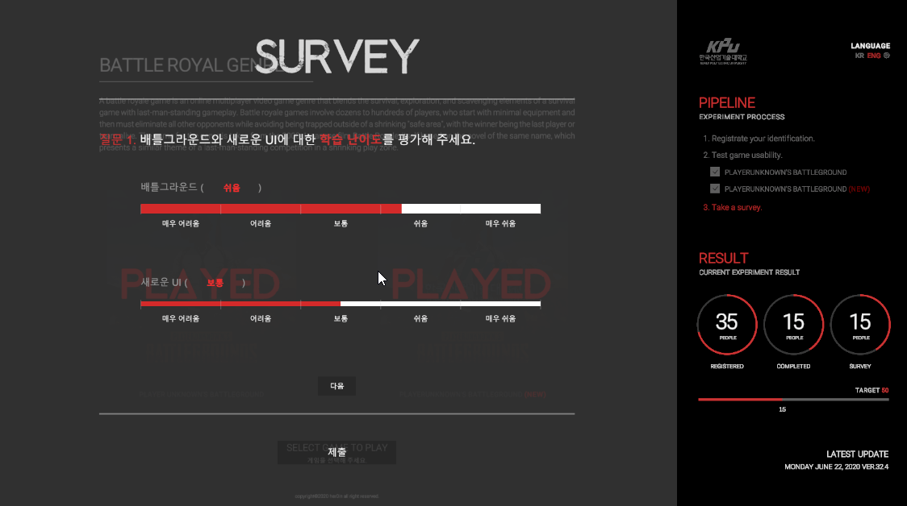

Human Factor
Introduction
Implementing innovative UI for battle royal games.
This simulator is designed to propose new UI and perform usability tests for Battle royal games, that contains fast battle tempo and hardcore weapon customization.
This simulator contains two types of user interface, one is from Battleground (drag and drop method) and the other is a New UI that we developed to improve usability.
Materials and Methods
Weapon system, Enemy System, Level Design, Experiment Scenario.

First, I made a simple weapon system that player's can shoot something. If player shoots an object, it will leave bullet hole decal.

Second, I made some enemy's that player can play around with it. They are little bit scary.
Thrid, I designed some levels on paper and passed it to my art designer.

Last, I made some level scenarios and instructions that players should follow.
Grahpics Update
Model, Texture, Shader created by relasers.




Then we reworked our simulator graphics quality. Our visual concept was 'cyberpunk'. So we added some rain effect and puddles to give strong impression of our concept.
Experiment
Conducted experiment with 60 game engineering department students.

We have conducted this experiment to 60 people of game enginnering department students. We saved their customization data and survey in local computer and send it to our email.
copyright ©her0in all right reserved.